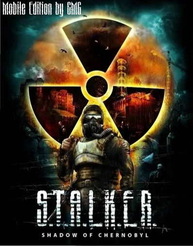

Информация:
Разработчик порта :CMG
Правообладатель:GSC
Платформа: Android & IOS
Описание игры:
2012 год. Шесть лет прошло с момента Второй катастрофы, затмившей события апреля 1986 года. Действие игры происходит в Чернобыльской зоне отчуждения, превратившейся из места, где ломались судьбы, в угрозу всему человечеству. Свои тайны Зона раскрывает неохотно, через силу, и редкий герой сможет добраться до самого ее сердца и узнать – какая опасность поджидает его там? Опасность, по сравнению с которой мародеры и вражеские группировки, все монстры и аномалии Зоны покажутся лишь подготовкой к встрече с чем-то более фатальным и пугающим. А пока... Готовься, герой. Собирай артефакты и торгуй, прощупывай дорогу и проверяй тылы, хватай рентгены и сражайся – но только выживи! И тогда, быть может, если будешь настойчив и особо везуч, ты узнаешь – почему все это свалилось на тебя.